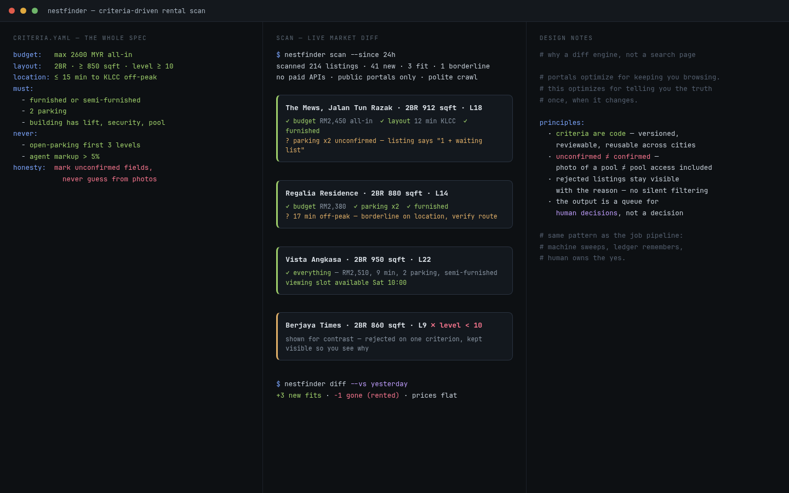

Declare what you need in YAML. Watch the live market. See only the delta.

Apartment hunting is a noise problem wearing a data problem's clothes. The criteria are clear — budget, bedrooms, in-unit laundry, square footage, neighborhood — but they live in your head while you re-run the same search across three listing sites, scroll the same inventory, and wonder whether anything changed since Tuesday. Worse, the inventory moves hourly: a unit that fit yesterday is leased, a new one posts at 11 pm, prices drift without notice. The browser-tab treadmill doesn't scale, and the one interesting signal — what just appeared that I haven't seen and actually fits — is exactly what no listing site surfaces well.
Nestfinder inverts the workflow. Instead of searching, you declare. A single criteria.yaml holds the whole brief: hard constraints (a monthly cap that includes parking, one bedroom only, in-unit washer and dryer as a must-have, a 600 sq ft target with a 500 floor), soft scoring (neighborhood tiers, walk-score thresholds, grocery and pharmacy walk-minutes), explicit dealbreakers, and a rolling move-in window — available within today plus three weeks, re-evaluated each sweep rather than hard-coded.
A daily cron sweep runs the declared search against apartments.com through a real
browser session — probed first, because the results and detail pages carry no bot wall —
and pipes the resulting property URLs into a small diff engine.
diff_state.py compares the fresh URL set against
state/seen.json, returns only the unseen ones with a first-seen timestamp, and
writes state atomically (temp file plus os.replace) so a crash mid-write can't
corrupt the ledger. Alerts fire only on new listings. Each new listing gets a research pass
— price, lease terms, amenities, walk score; shortlisted ones get the deeper pass over fee
schedules, reviews, and market-median comparison.
What you review lives on a local board: a 127.0.0.1 server with a Leaflet map and four statuses per listing — keep, discard, research, contacted. The sweep finds, the human decides, and the state file remembers both.
The ledger is deliberately boring: property URL to {first_seen, status},
with a single-writer rule — only the finder job may write it. Around the core, helper
scripts build context: listings geocoded against OpenStreetMap data, neighborhood metrics
collected and tiered by density × price × centrality, deals imported with a source audit.
Tests cover the board app, the audit, the deals, and the neighborhood logic — a tool you
trust with a housing search should be tested like one. The whole thing runs unattended on
cron and pings a self-chat when something new actually fits the brief.